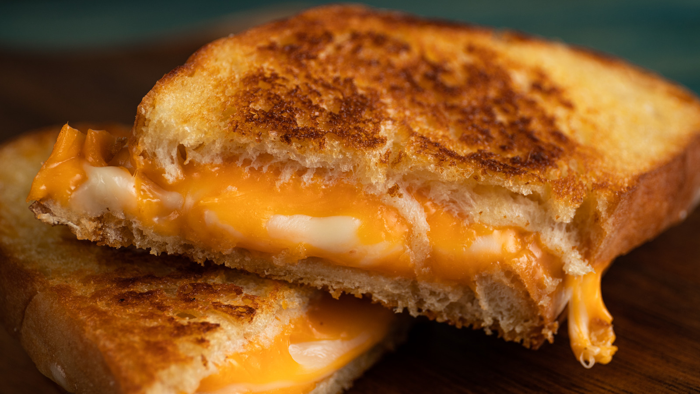
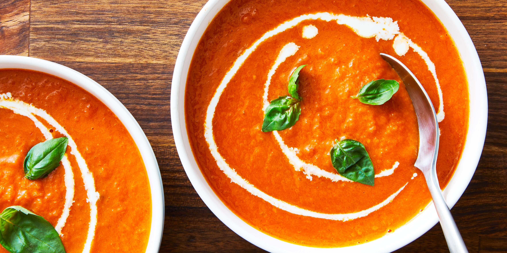

Everyone needs to know how to make a classic grilled cheese sandwich. Whether you're a beginner cook or an old pro, you'll come back to this top-rated grilled cheese recipe again and again.

Grilled Cheese Ingredients
4 slices white bread
3 tablespoons butter, divided
2 slices Cheddar cheese
Grilled Cheese Steps
Preheat a nonstick skillet over medium heat. Generously butter one side of a slice of bread. Place bread butter-side down in the hot skillet; add 1 slice of cheese. Butter a second slice of bread on one side and place butter-side up on top of cheese.
Cook until lightly browned on one side; flip over and continue cooking until cheese is melted. Repeat with remaining 2 slices of bread, butter, and slice of cheese.

Tomato Soup Ingredients
4 cups chopped fresh tomatoes
2 cups chicken broth
4 cloves garlic
1 large slice of onion
2 tablespoons butter
2 tablespoons all-purpose flour
2 teaspoons white sugar, or to taste
1 teaspoon salt, or to taste
Tomato Soup Steps
Combine tomatoes, chicken broth, garlic cloves, and a large slice of onion in a stockpot over medium heat. Bring to a boil, and gently simmer for about 20 minutes to blend flavors.
Remove from heat and run the mixture through a food mill into a large bowl, or pan. Discard any stuff left over in the food mill.
Melt butter over medium heat in the now empty stockpot. Stir in flour to make a roux by cooking, whisking constantly, until mixture turns medium brown.
Gradually whisk in a bit of the tomato mixture to prevent lumps from forming, then stir in the rest.